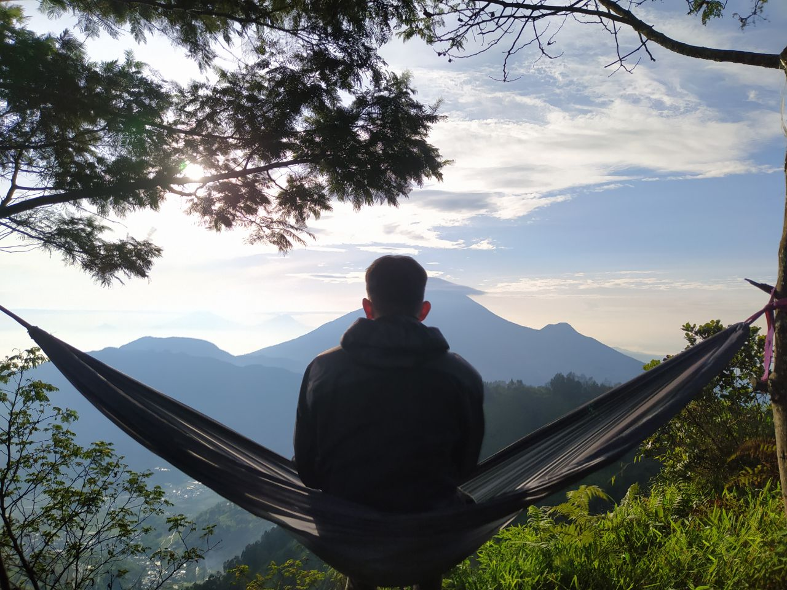
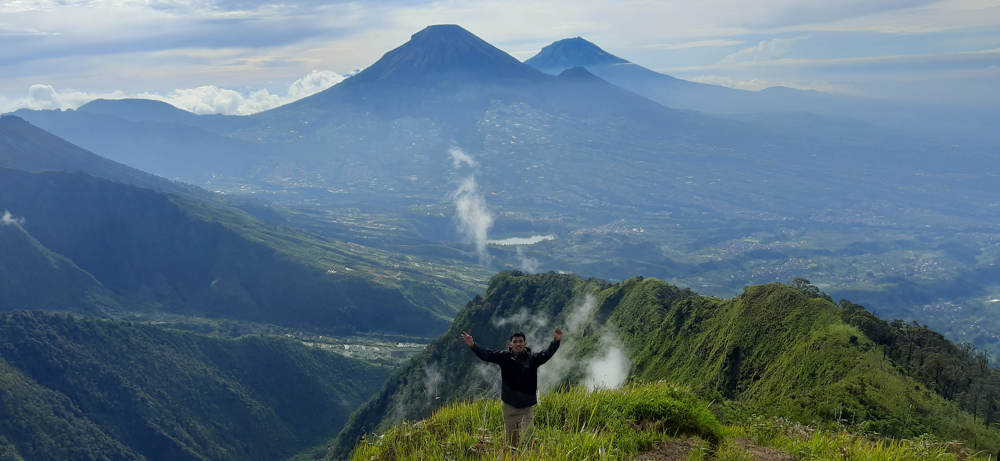
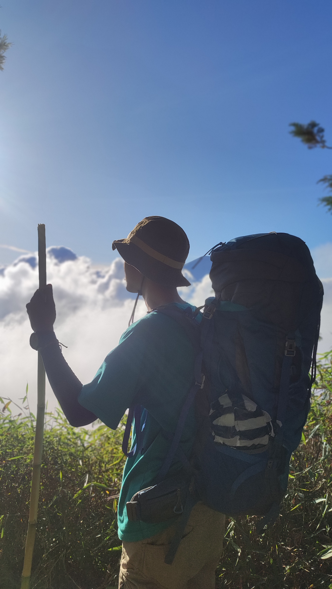
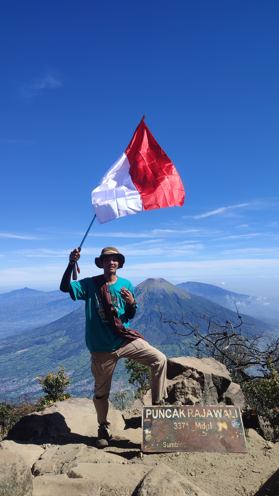
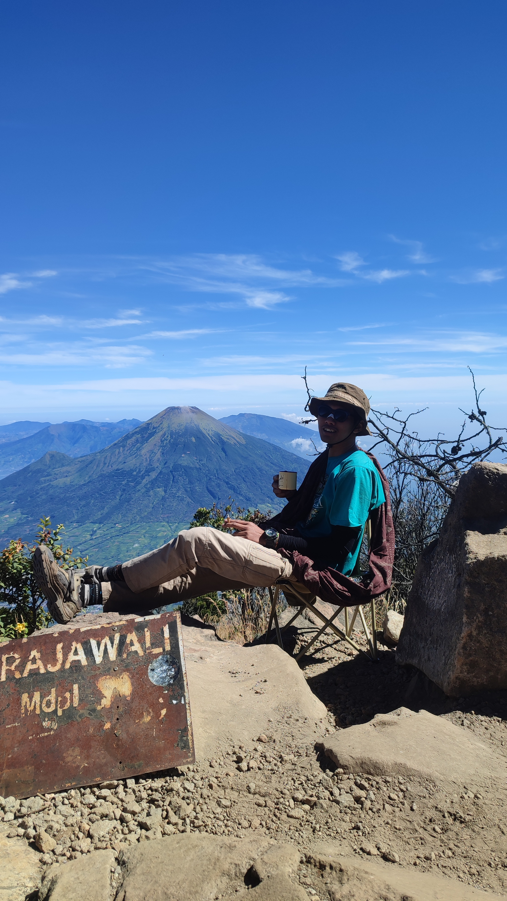

Profil
Lulusan S1 Teknik Informatika (cumlaude) yang bekerja di persimpangan antara market analysis, teknologi, dan digital content. Saya percaya hasil yang baik lahir dari proses yang disiplin dan dokumentasi yang rapi.
Saya Agus Triyadi — professional trader, content creator, dan freelancer dengan latar belakang Teknik Informatika. Saya menggabungkan analisis, teknologi, dan komunikasi untuk menciptakan pekerjaan yang terukur.
Portofolio ini menjadi ruang untuk memperkenalkan cara saya berpikir, bekerja, dan terus bertumbuh.
Lulusan S1 Teknik Informatika (cumlaude) yang bekerja di persimpangan antara market analysis, teknologi, dan digital content. Saya percaya hasil yang baik lahir dari proses yang disiplin dan dokumentasi yang rapi.
Bertanggung jawab, adaptif, dan fokus pada komunikasi yang jelas. Setiap pekerjaan saya susun dengan tujuan yang konkret, langkah yang terukur, dan perhatian terhadap detail.
Beberapa area yang menjadi fokus perjalanan profesional saya saat ini.
Analisis XAUUSD dengan pendekatan Elmethod dan SMC sebagai dua kerangka kerja yang berbeda, didukung jurnal dan evaluasi berkelanjutan.
XAUUSD · ResearchMembangun tools sederhana untuk membantu pencatatan, analisis data, dan pengambilan keputusan yang lebih konsisten.
Python · AutomationMengubah insight menjadi konten yang informatif, mudah dipahami, dan relevan untuk audiens digital.
Strategy · EducationBeberapa momen perjalanan dan pendakian yang saya dokumentasikan.






Temukan saya di GitHub atau ikuti dokumentasi saya di Instagram.